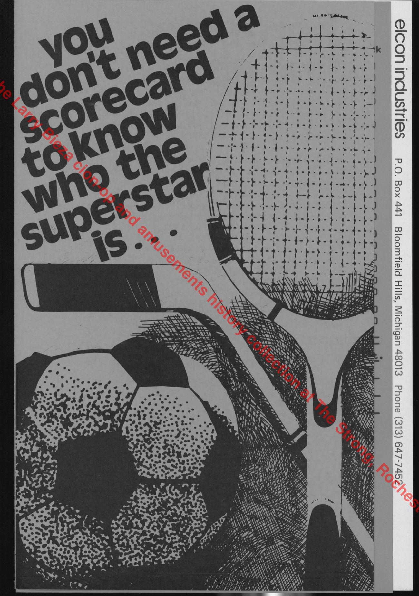
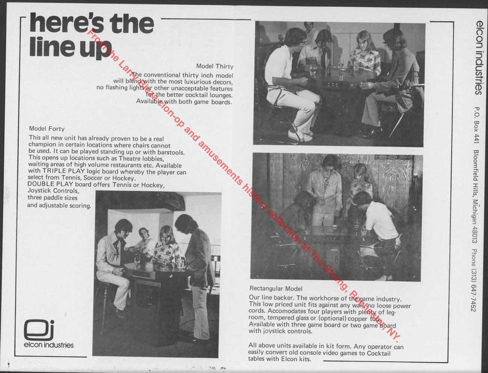
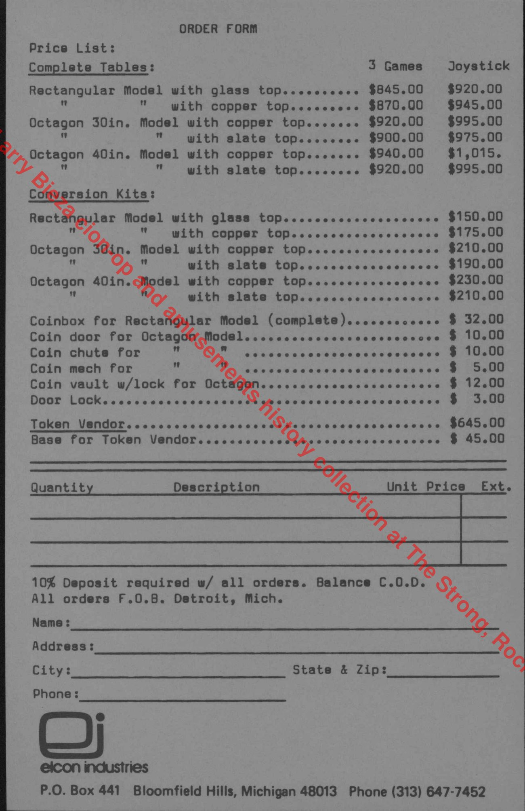
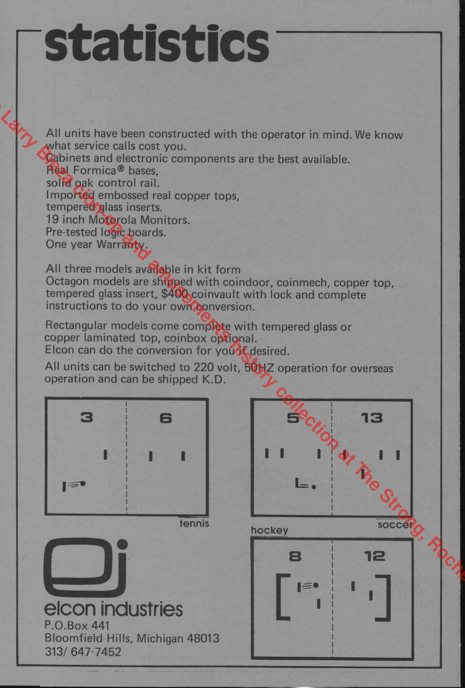
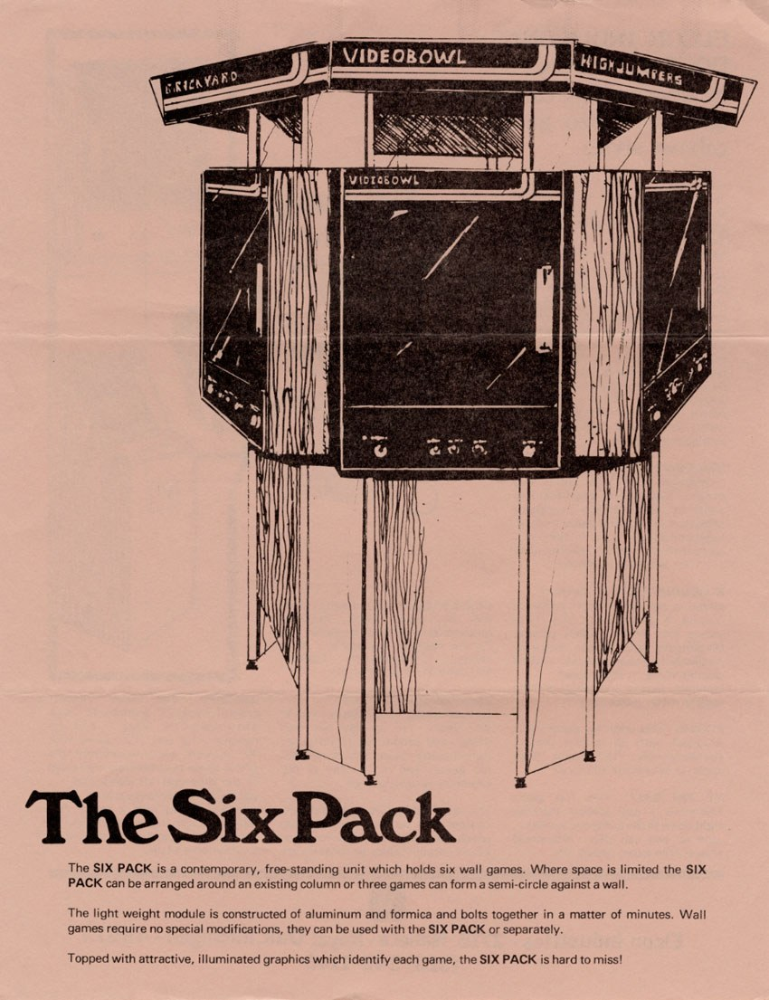
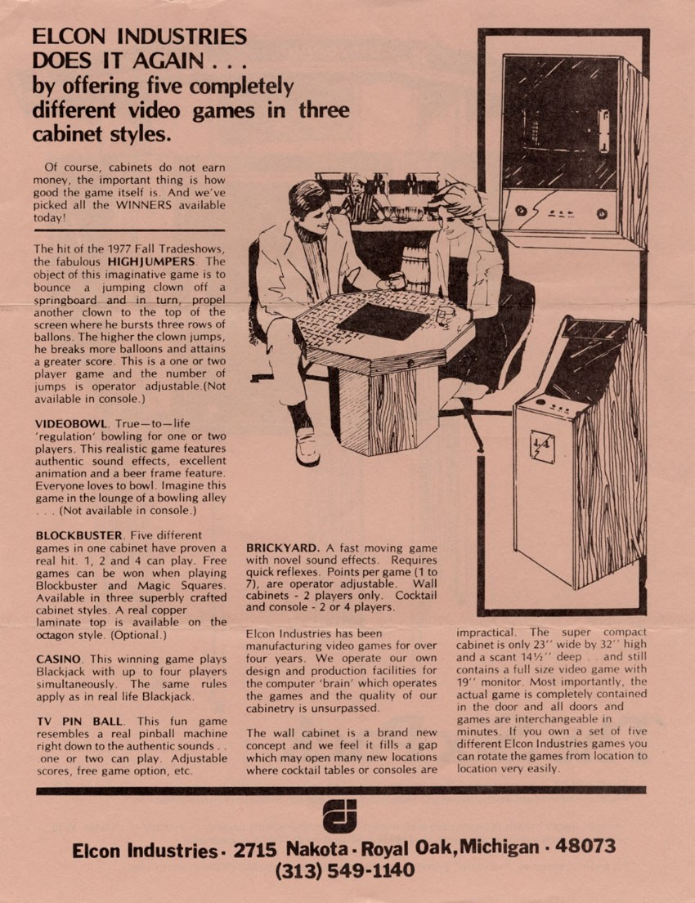
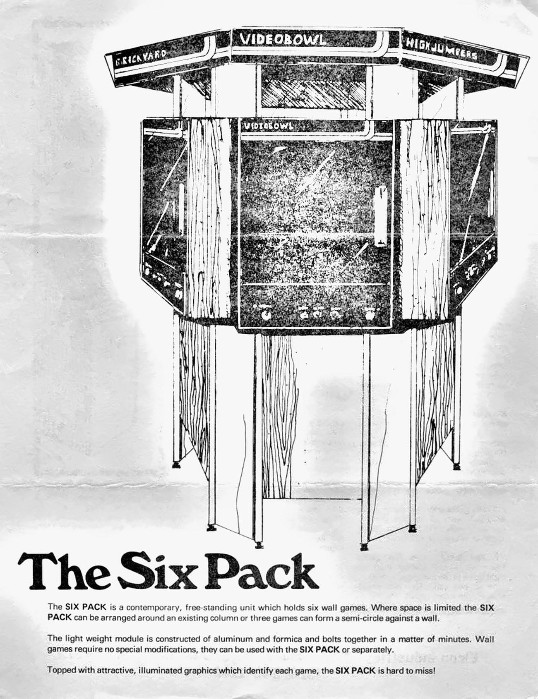
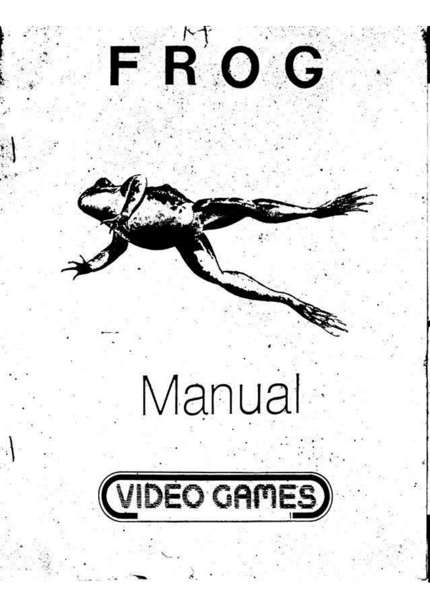

Elcon’s work as cabinet builder, assembler and supplier
Elcon Industries occupies an awkward but revealing place in American arcade history. It was small enough that later databases often reduced it to a list of names, yet the surviving record shows a much more complicated company: a Michigan cabinet builder, systems integrator, assembler, conversion specialist, marketer, and sometimes game-package brand whose commercial identity depended as much on how games were installed and sold as on who wrote the software inside them. Elcon moved through cocktail conversions, compact furniture, wall-mounted games, multi-game kiosks, novelty cabinets, restaurant booth tables, outside-board integrations, and finally the assembly and sale of Crazy Kong machines during the legal turbulence of 1982. [1][5][6][14][45]
The research therefore cannot be summarized accurately by asking only, 'Which games did Elcon develop?' In several cases the evidence points directly to an outside game family: Highjumpers corresponds strongly to Exidy's Circus; Video Bowl to Exidy's Robot Bowl; Brickyard to Ramtek's Barricade/Brickyard; the 1979-80 directory openly places outside-origin titles such as Blasto and Space Wars inside Elcon's offering; Diversions was built around licensed boards from other suppliers; and the federal Crazy Kong case makes Elcon's role as assembler and seller explicit. [2][27][32][43][48][49]
The catalog distinguishes 14 Elcon-branded, Elcon-built or assembled, or distinctly Elcon-packaged arcade game families. That is not a claim of fourteen original programs. A broader count reaches 21 by adding seven confirmed outside-origin games that Elcon offered or installed. The Six Pack, wall cabinet, cocktail lines, Diversions, whiskey barrel, Magic Trolley, compact cabinets and Token Vendor are documented separately as hardware and platforms. This distinction reflects the company’s varied roles in supplying arcade equipment.
1. Origins: Electronic Concept Industries, E.C.I. and the Elcon name, 1975
The earliest verified commercial evidence dates to July 30, 1975. A Marketplace advertisement under the full name Electronic Concept Industries, in Pontiac, Michigan, advertised repair of video and wall games, conversion of existing games into cocktail tables, manufacture of new cocktail tables in three styles, and a five-game offering. This is the oldest presently verified primary evidence in the Elcon operating lineage. [53]
Only a few months later, on October 18, 1975, a Cash Box directory for the Music Operators of America exposition independently listed Elcon Industries at P.O. Box 441, Bloomfield Hills, with telephone 647-7452 and booth 96. November 1975 Play Meter advertising then used the wording Electronic Concepts Ind. Marketing / E.C.I. at the same Bloomfield Hills box and telephone associated with Elcon. [24][50]
Those overlapping names correct an easy but over-neat story. The evidence strongly supports one operating continuity between E.C.I. and Elcon, but it does not support a simple sequential sentence such as 'Electronic Concept Industries renamed itself Elcon Industries.' The Elcon name was already in period use while an E.C.I. identity continued in commerce. Sources also preserve both singular 'Electronic Concept Industries' and plural 'Electronic Concepts Ind. Marketing.' Later directories sometimes use 'Elcon Games, Inc.' while legal and trade sources use Elcon Industries or Elcon Industries, Inc. The exact legal mechanism - formal name change, assumed name, related entity, marketing division, predecessor/successor, or another arrangement - remains unresolved. [24][50]
Elcon’s verified commercial operating lineage begins in 1975. Its exact incorporation date and the legal relationships among the overlapping company names remain unknown.
2. The cocktail-table and conversion business, 1975-1976
The early Elcon story is unusually physical. The surviving documentation is not just a game-title list; it is a catalog of furniture, materials, conversion methods, operator economics, and room-placement ideas. The strongest source is a four-page grayscale Elcon brochure preserved in the Larry Bieza coin-op and amusements history collection at The Strong. The brochure is undated, but three conversion-kit prices match an April 1976 Elcon advertisement exactly - $150, $210, and $230 - giving the brochure a strong c. 1976 placement. [25][45]

The brochure defines three cabinet families. Model Thirty was the conventional thirty-inch octagonal seated cocktail table. Model Forty was a forty-inch octagonal standing or barstool-height model, positioned for theater lobbies and high-volume restaurant waiting areas where chairs were undesirable. The Rectangular Model was a lower-priced, wall-fitting four-player table; a 1976 advertisement gives the format at roughly 26 by 36 inches. [45]

Elcon marketed the cabinets as furniture rather than bare plywood coin boxes. The brochure specified Formica bases, solid-oak control rails, embossed real-copper tops, tempered-glass inserts, 19-inch Motorola monitors, pre-tested logic boards, and a one-year warranty. It also advertised 220-volt, 50-Hz operation and knock-down shipment for overseas customers. Those export and shipping options matter because they show Elcon selling itself as a cabinet/system supplier capable of supporting customers beyond a local Michigan route. [45]

The product economics were equally explicit. Complete-table pricing ran from roughly $845 to about $1,015 depending on cabinet and board option, with the joystick-equipped column consistently $75 higher than the three-game configuration. Elcon sold conversion kits as well as complete tables, reinforcing the company's early identity around modifying existing locations rather than requiring operators to throw away otherwise serviceable equipment. The order form also offered a Token Vendor for $645 and a separate base for $45; no surviving evidence identifies its manufacturer or proves Elcon designed it. [45]

Two game packages anchor these early tables. Double Play offered Tennis or Hockey, with joystick controls, three paddle sizes and adjustable scoring. Triple Play allowed selection among Tennis, Soccer and Hockey. E.C.I. advertising claimed that the company designed and manufactured its own logic boards, but the brochure supplies no schematics, board markings or outside technical confirmation. The responsible statement is therefore that Elcon/E.C.I. sold these packages and claimed in-house board design and manufacture; independent technical authorship remains unresolved. [24][45]
The brochure is preserved in Box 13, Folder 29 of The Strong’s Larry Bieza collection. Staff identified the contents as Model 30, Model 40 and rectangular cocktail-table material, rather than The Six Pack. The institution’s public catalog search did not identify Six Pack or 6 Game Kiosk material. That limits what has been located in this collection; it does not establish that no Six Pack documentation survives elsewhere.[10][11][21][22][44][45]
The whiskey-barrel cabinet
Elcon also experimented with novelty furniture. A March 1976 Play Meter item verifies an oak whiskey-barrel video cabinet approximately thirty-five inches high and configurable with knob or joystick controls. The cabinet is important because it shows that Elcon's willingness to reshape the game environment predates the Six Pack and Diversions. [26]
Later accounts have associated the whiskey-barrel cabinet with Ramtek’s Hit Me, but the contemporary Play Meter item does not identify the installed game. The cabinet is verified; Hit Me remains an unconfirmed association.[16][26]
3. Company names, addresses and leadership
Elcon's leadership chronology is more complicated than older summaries suggested. A 1976 Billboard directory names Joyce DeVries as president and Andre R. Dubel as sales manager. An April 1978 Play Meter photograph identifies Joyce DeVries as an Elcon employee alongside Dubel and staff. The April 1979 Billboard directory again lists J. DeVries as president and Dubel as sales manager. [54][55][43]
A July 1977 Cash Box manufacturer directory, however, calls the concern Elcon Games, Inc. and names Andre Dubel as president. The discrepancy with the 1976 and 1979 Billboard listings may reflect different entities, directory lag, varying titles or another administrative circumstance. The surviving sources do not establish a simple DeVries-to-Dubel succession.[56]
By June 1980, however, a Billboard directory does list Andre R. Dubel as president and Thomas Tol as general manager. By March 1982 Play Meter lists Dubel as president and Don Suwinski as general manager. The federal Nintendo litigation independently confirms Dubel as president of Elcon Industries, Inc. in 1982. [6][14][46]
Addresses also chart the company's movement. The earliest lineage uses Pontiac and then Bloomfield Hills contact points. The 1977 AMOA directory places Elcon at 3285 Hilton Road, Ferndale, with three consecutive booths C-27 through C-29. By 1979 the company is at 2715 Nakota, Royal Oak, the address that remains visible in later trade and legal evidence. These changes are useful operating markers even though the missing corporate records prevent them from being translated into exact legal-entity dates. [43][51]
4. Elcon's recurring design philosophy: make the cabinet adaptable
Across otherwise different products, the strongest recurring Elcon idea is interchangeability. In the early cocktail years, the company sold conversion kits and complete tables so operators could reuse locations and equipment. In the Six Pack era, the front-door game assembly was advertised as interchangeable in minutes. Diversions later accepted customer-selected outside logic boards. The March 1982 advertisement again emphasized that an operator who bought an Elcon game could still change it later. [2][5][6][25][45]
This continuity makes cabinet architecture a major part of Elcon's history rather than decorative packaging around a software catalog. The company's surviving record is most coherent when read as a series of answers to operator questions: How can I fit more games in less floor space? How can I place a video game in a restaurant or lounge? How can I change the game without replacing the cabinet? How can I sell outside boards inside a consistent physical environment?
5. The Six Pack, wall games and the 6 Game Kiosk
The Six Pack remains the clearest expression of Elcon's design philosophy. A surviving two-page sales flyer depicts a free-standing structure supporting six individual wall-mounted video games. The structure could surround an existing column, or three wall games could be arranged in a semicircle against a wall. Elcon described the support assembly as lightweight aluminum and Formica that bolted together in minutes, with illuminated graphics above the machines to identify the games. [1]

Crucially, the wall games were not permanently dependent on the central structure. Elcon advertised them as complete machines that could be installed in the Six Pack or operated separately. The individual wall cabinet measured 23 inches wide, 32 inches high and 14.5 inches deep and used a full-size 19-inch monitor. The flyer states that the game itself was contained in the front-door assembly and that doors/games could be exchanged in minutes. This is unusually aggressive modularity for 1977 and anticipates the same sales idea seen in Diversions and the 1982 conversion advertisement. [2]

Known flyer headers include Brickyard, Videobowl and Highjumpers. The flyer also discusses other Elcon games and cabinet forms, making it both a Six Pack document and one of the central sources for the 1977 product line. No verified complete surviving Six Pack has been documented in the available evidence, and no authenticated installation photograph from a second angle has been secured. The missing photographs and survivors leave details unresolved; they do not establish that the product was never built or sold. [1][2][12]

The phrase ‘6 Game Kiosk’ appears in Elcon’s 1979 and 1980 directory listings. A 1978 trade description documents the same unusual six-wall-game arrangement, including placement around a column or as three units in a semicircle. The Six Pack and the later kiosk are therefore very strongly supported as the same design or a direct continuation. No located document explicitly equates the two names, so a small uncertainty remains.[43][46]
Many technical questions remain. The flyer does not reveal the rear cabinet profile, mounting hardware, internal chassis, PCB placement, power supply, speaker/coin-door arrangement, the central support's electrical distribution, full structural footprint, detailed assembly sequence or production quantity. A future reconstruction should therefore distinguish documented dimensions from extrapolated engineering. The evidence is strong enough for a historically informed feasibility build, not an exact replica certified from original drawings. [1][2]
Magic Trolley and mobile-arcade experimentation
The Magic Trolley belongs to the same family of Elcon experiments in changing where and how arcade games could be encountered. Specialist historian Keith Smith reported that Elcon showed a mobile-arcade concept called the Magic Trolley at the 1977 AMOA exposition, and relayed an Andre Dubel recollection that perhaps only one was sold. The period AMOA directory independently confirms that Elcon occupied booths C-27 through C-29 at the show, but no primary show photograph or advertisement identifying the Magic Trolley itself has been located. [9][51]
Accordingly, the existence and show association are strongly supported, while the reported production/sales quantity remains interview-level evidence. The Magic Trolley is not included in the 14-game count because it is an environment/platform concept, not a distinct game program.
6. What the game counts include
Elcon’s product range included game titles, cabinet families, multi-game installations, conversion services, outside-board offerings, distribution channels and corporate relationships. These cannot all be counted as separate arcade games. The 14-family catalog below is restricted to distinct Elcon commercial game packages, with other offerings documented separately.
A title belongs in the fourteen-family group only when the surviving evidence supports a distinct Elcon-branded, Elcon-built/assembled, or distinctly Elcon-packaged commercial game family. Outside origin does not automatically remove a title if Elcon created a distinct commercial package - Highjumpers and Video Bowl are examples. Conversely, merely offering an outside manufacturer's game in a directory or installing an outside board in Diversions does not automatically turn that software into an Elcon release.
The broader 21-family count adds seven outside-origin games verifiably offered or installed by Elcon: Blasto, Depthcharge, Gypsy Juggler, Space Wars, Tank Battalion, Devil Zone and Space Force. Hardware and platform products remain separate from both counts. Any future change would need evidence for an additional or differently identified game family.
7. Fourteen Elcon-branded or assembled game families
7.1. Double Play
Date: 1975-c. 1976. Counted as: one game family.
Double Play belongs to the verified 1975-76 E.C.I./Elcon cocktail program. The Strong brochure describes a two-game sports board allowing the operator or player to choose Tennis or Hockey. Joystick control, three paddle sizes and adjustable scoring distinguish it from a generic one-line 'Pong clone' label. [45]
The importance of Double Play is partly corporate. E.C.I. advertising claimed that its Double Play and Triple Play logic boards were designed and manufactured in-house. That is a company claim rather than independently verified engineering authorship because no surviving schematic, board legend or third-party technical source has yet closed that gap. [24][45]
Counted as: one Elcon/E.C.I. game family. It is counted because the commercial package is directly documented, not because the evidence establishes who drew every circuit.
7.2. Triple Play
Date: 1975-c. 1976. Counted as: one game family.
Triple Play is the three-game companion to Double Play. Primary Elcon brochure material lists Tennis, Soccer and Hockey as selectable games. The package was sold in the Model Thirty, Model Forty and rectangular cabinet program, giving it a clear role in Elcon's early furniture-oriented strategy. [45]
As with Double Play, E.C.I.'s own claim of in-house logic-board design and manufacture is preserved but technically unconfirmed. The distinction matters because manufacturer advertising does not independently prove engineering authorship. [24][45]
Counted as: one Elcon/E.C.I. game family.
7.3. 5 Games
Date: c. 1975. Counted as: one game family — strongly supported.
Elcon's 5 Games posed an early dating and authorship trap. Later databases have circulated a 1970 date that does not fit the period evidence and is rejected. The relevant comparative artifact is Fun Games' 1975 Take Five. Its five-mode/player-count architecture corresponds one-for-one with the Elcon 5 Games concept. [4][57]
The evidence supports treating 5 Games as part of the Take Five design/game family rather than an independently invented Elcon five-game collection. What remains unknown is how that relationship worked commercially: licensed circuitry, purchased boards, copied or adapted design, an intermediary supplier, or another arrangement. No surviving contract or technical bridge has resolved it.
The commercial evidence strongly supports counting 5 Games as one Elcon game family. Its relationship to Take Five remains less securely documented than the other entries, which is why the fourteen-family total carries some uncertainty.
7.4. Blockbuster
Date: 1977. Counted as: one game family.
Blockbuster is one of the best cases for why Elcon packaging deserves to be treated separately from underlying design ancestry. A 1977 Elcon flyer describes a five-game menu: Magic Squares, Tennis, Soccer, Gravity Ball and Blockbuster, and shows the system in upright and multiple cocktail formats. [42]
Surviving hardware strengthens the Elcon-specific side of the story. Collector documentation preserves an operating Blockbuster +4 cabinet, while separate PCB documentation shows a large discrete-logic board with 'ELCON IND' etched into the board artwork. That makes it difficult to explain Blockbuster as merely an untouched stock board installed in an Elcon box. The evidence instead supports an Elcon-specific implementation. [13][59]
At the same time, the design family clearly overlaps Fun Games Take Five and United Games Video Five. The safest synthesis is that Blockbuster represents an evolved Elcon member of that broader five-game design lineage. The original circuit authorship and exact license/engineering path from Fun Games or related suppliers to Elcon remain unresolved. A modern U.S. Billiards attribution has not been elevated because period primary support has not been secured. [57][58]
Counted as: one Elcon game family.
7.5. Highjumpers
Date: 1977-1980. Counted as: one game family.
Highjumpers appears prominently in the Six Pack material and remained in the 1979-80 Elcon catalog. The key identification came from comparing Elcon's own play description with Exidy's primary Circus manual and sales flyer. The wording follows Circus closely and, more decisively, repeats the same unusual operator adjustment of 3, 5, 7 or 9 jumps. [2][43][46][48]
That evidence strongly identifies the underlying game family as Circus. It does not reveal whether Elcon bought original Exidy boards, licensed the game, copied the circuitry, altered the program, or used another source. Elcon’s package is strongly identified with Exidy Circus, but neither a license nor unauthorized copying is established. [48]
Counted as: one Elcon-branded commercial family because the Elcon package itself is directly documented.
7.6. Video Bowl
Date: 1977-1980. Counted as: one game family.
Video Bowl is the bowling counterpart to Highjumpers: an Elcon-branded title whose underlying identity becomes clear only when primary feature descriptions are compared. Elcon's description matches Exidy Robot Bowl in one/two-player regulation bowling, animated bowler presentation, characteristic sound effects and, most tellingly, the unusual beer-frame feature. [2][49]
The product remained in Elcon's 1979 and 1980 directory catalog. As with Highjumpers, the evidence is strong enough to identify the game family but not to prove board supplier, licensing terms or authorization. [43][46]
Counted as: one Elcon-branded commercial family.
7.7. Brickyard
Date: 1977. Counted as: one game family.
Brickyard was once misidentified in collector discussion as an Atari Breakout derivative. Period reporting and the game’s features support a different identification. Contemporary 1977 trade/legal reporting about the Ramtek/Gremlin Barricade trademark dispute states that Ramtek would use the Brickyard name for further Barricade-type games. Elcon's flyer settings align with the Barricade/Brickyard architecture, and the preserved ROM lineage independently supports Brickyard as a Barricade-family clone or revision. [60][61][2]
The evidence is very high confidence: Elcon Brickyard belongs to the Ramtek Barricade/Brickyard lineage, not Atari Breakout. The Elcon-branded commercial package is still historically real regardless of where the underlying design originated.
Counted as: one Elcon package; dated to 1977 unless stronger primary evidence establishes an earlier Elcon-branded release.
7.8. Casino / Super Casino
Date: 1977-1981. Counted as: one game family.
Casino is verified in Elcon's 1977 material as a blackjack game, supporting up to four players and a progressive jackpot where legal. A 1978 directory description explicitly calls Casino 'Video blackjack.' [42]
By April 1979 the catalog uses Super Casino, and that name remains in the June 1980 directory and January 1981 compact-cabinet advertisement. The evidence supports treating Casino to Super Casino as one continuing blackjack lineage. The phrase 'Super Casino Video Blackjack' in Elcon product-line wording is best read as a title plus descriptor rather than proof of a second title named Video Blackjack. [43][46][47][64]
The exact hardware change implied by 'Super' remains unknown, as does the underlying board supplier. A separate later database entry for Video Blackjack is not counted without independent period evidence.
Counted as: Casino/Super Casino once, not two or three releases.
7.9. TV Pin Ball
Date: c. 1975-1977. Counted as: one game family.
TV Pin Ball is one of the less technically resolved titles but remains a real Elcon product. Surviving Elcon product description supports one- or two-player play with adjustable scores and a free-game option. [2][4]
The exact release chronology is weaker than the product identity. Rather than force an exact year from later database metadata, the available evidence places it in the c. 1975-77 early Elcon range. Counted as: one Elcon title.
7.10. Cosmic Attackers
Date: 1979-1981. Counted as: one game family.
Cosmic Attackers is a verified Elcon commercial package and an unusually useful case for separating a model name from whatever board happens to survive inside a cabinet. Period material and later advertising place it in upright, cocktail and compact-cabinet contexts, including the January 1981 small-cabinet advertisement. [36][47][64]
Survivor reports document materially different internal configurations. One Elcon cocktail has been reported with a Sega Space Attack board, while other examples have multi-board stacks or different monitor arrangements. No one reported configuration establishes a standard hardware arrangement for every Cosmic Attackers machine. They show instead that Elcon could preserve a commercial package identity while sourcing different electronics. [36]
Counted as one Elcon game package. Surviving examples differ in board and monitor configuration, so each machine’s history matters.
7.11. Collision
Date: by 1980. Counted as: one game family.
Elcon’s period product-line material directly names Collision as a manufactured or offered title. Its inclusion therefore rests on contemporary commercial evidence.[64]
Dodge 'Em, by contrast, appears in later game lists with a precise November 1979-style date but has not been found in a period Elcon ad, flyer, manual, price sheet, labeled survivor or service record. There is also no evidence strong enough to say Dodge 'Em was simply another name for Collision.
The conservative historical treatment is therefore asymmetric: Collision is verified and counts once; Dodge 'Em remains an unverified secondary attribution and does not count. The evidence does not establish either 'two distinct games' or 'the same game' unless new period evidence appears.
7.12. Royal Flush Drawpoker
Date: by 1981. Counted as: one game family.
Royal Flush Drawpoker is a separate Elcon offering, not part of the Casino/Super Casino blackjack lineage. Product-line material says it was available in upright, wall and cocktail-table models, and the January 1981 compact-cabinet advertisement includes Royal Flush among the available games. [47][64]
The unresolved part is electronics: no board supplier or exact underlying draw-poker design has been securely identified. The title itself and Elcon's commercial offering are strong enough for the fourteen-family count; software authorship is not.
7.13. Astro Combat / Astro Combat III
Date: 1981. Counted as: one game family.
Astro Combat is directly advertised by Elcon under the plain title in January 1981. That primary ad establishes a real Elcon commercial package independent of later survivor interpretation. [47]
A surviving compact Elcon cabaret has a damaged label that appears to read Astro Combat III, with matching Elcon-style inventory numbers on major internal components. The running hardware is Moon Cresta-like. This supports Astro Combat III as an Elcon package/model designation, but no Astro Combat I or Astro Combat II commercial releases have been verified. [35]
The best-supported interpretation is therefore that 'III' more likely marks an Elcon package, model or revision than a conventional trilogy. That reading remains an interpretation; the suffix’s precise meaning is unresolved.
Counted as: Astro Combat / Astro Combat III once.
7.14. Crazy Kong / Crazy Kong Part II
Date: 1981-1982. Counted as: one game family.
Crazy Kong supplies the clearest legal record of Elcon acting as an assembler and seller around outside-origin boards. In Nintendo of America v. Elcon, the federal court described Elcon Industries, Inc. as a Michigan corporation engaged in assembling and selling coin-operated electronic video games and components. The court found that beginning in November 1981 Elcon purchased Crazy Kong printed-circuit boards from Arctic International in New Jersey and International Scientific in Fullerton, California; the boards appeared to have been manufactured by Falcon. [14][32]
Elcon intended to install those boards in complete games for resale. The opinion records distribution, offers for sale and sales of numerous Crazy Kong units in Michigan and elsewhere, at least as late as April 1982. Elcon said it had stopped handling the game in April. On October 4, 1982 the court granted preliminary injunctive relief to Nintendo. [32]
This is not evidence that Elcon programmed Crazy Kong. It is strong evidence that Elcon created complete commercial machines around purchased outside boards and sold them as part of its business. Crazy Kong Part II belongs to the same Falcon game family/revision context and does not prove an Elcon model sequence. [35]
Counted as: Crazy Kong / Crazy Kong Part II once as an Elcon-assembled commercial family.
8. Seven additional games supplied by Elcon
The April 1979 Billboard directory provides a particularly clean snapshot of Elcon's middle-period catalog. It lists J. DeVries as president, Andre Dubel as sales manager, the Royal Oak address and nine Elcon offerings: Blasto, Blockbuster, Depthcharge, Gypsy Juggler, Highjumpers, 6 Game Kiosk, Space Wars, Super Casino and Video Bowl. A June 1980 directory repeats the same nine-item offering while listing Andre Dubel as president and Thomas Tol as general manager. This establishes at least fourteen months of catalog continuity. [43][46]
Four of those names have clear outside origins independent of Elcon: Blasto and Depthcharge trace to Gremlin; Gypsy Juggler to Meadows Games; Space Wars to Cinematronics. Their appearance in Elcon's catalog is therefore important commercial evidence, but it is not evidence that Elcon developed the programs. The surviving material does not yet establish the exact Elcon cabinet, board supplier, license or purchase arrangement for each. [43]
An outside-origin game could reach an Elcon cabinet through purchase, licensing, distribution, adaptation or unauthorized copying. Its origin alone does not establish which arrangement applied. For these four titles, the Elcon commercial association is verified but the supply mechanism remains unknown.
8.1. Blasto
Date and context: By 1979. Original lineage: Gremlin origin. Period directory confirms Elcon offering/association; exact Elcon cabinet, licensing and supply path unresolved.
8.2. Depthcharge
Date and context: By 1979. Original lineage: Gremlin origin. Period directory confirms Elcon offering/association; exact Elcon cabinet, licensing and supply path unresolved.
8.3. Gypsy Juggler
Date and context: By 1979. Original lineage: Meadows Games origin. Period directory confirms Elcon offering/association. It is distinct from Highjumpers; the available evidence does not establish an unauthorized copy.
8.4. Space Wars
Date and context: By 1979. Original lineage: Cinematronics origin. Period directory confirms Elcon offering/association; exact package and authorization path unresolved.
8.5. Tank Battalion
Date and context: 1981 Diversions context. Original lineage: Namco / Game Plan chain. Outside licensed board/game family relevant to Elcon's Diversions integration model; included among the broader associated offerings, outside the 14 Elcon game families.
8.6. Devil Zone
Date and context: 1981 Diversions context. Original lineage: Universal origin. Outside licensed board/game family relevant to Elcon's Diversions integration model; included among the broader associated offerings, outside the 14 Elcon game families.
8.7. Space Force
Date and context: 1981 Diversions context. Original lineage: Venture Line origin. Outside licensed board/game family relevant to Elcon's Diversions integration model; included among the broader associated offerings, outside the 14 Elcon game families.
9. Diversions: restaurant tables with other companies’ game boards
By 1981 Elcon's integration model became explicit in print. Play Meter described Diversions, a booth-style dining/video table developed principally for ShowBiz Pizza Place. The article specifies a 14-inch color monitor and a tabletop around 32 by 41 inches, designed to preserve food space and leg/knee room in a restaurant booth. Andre Dubel was quoted saying the concept was operating in ten locations and 'doing nicely' at the time. [5][27]
The more important historical point is how games reached Diversions. The article describes customer-selected licensed logic boards and names Universal USA, Data East and Game Plan as outside suppliers for current or future Elcon games. That is direct evidence that Elcon's cabinet identity and commercial package could be distinct from the software origin. [27]
Three outside game families are associated with the Diversions offering: Tank Battalion through the Namco/Game Plan chain, Devil Zone through Universal, and Space Force through Venture Line. The specific Data East title has not been identified. Astro Fantasia, Lock ’N Chase and Pro Golf remain possibilities rather than documented installations.
Diversions is a major Elcon cabinet system rather than a fifteenth game. Its use of separately supplied, licensed boards makes the distinction between cabinet manufacture and game authorship especially clear.
10. Compact cabinets and the 1981 product transition
The January 15, 1981 advertisement 'If we made them any smaller' shows Elcon compressing the arcade cabinet into two compact forms. The ad gives dimensions of 32 x 32 x 28 inches for a low format and 24 x 24 x 59 inches for a narrow upright, both with 19-inch color monitors. It offers Astro Combat, Cosmic Attackers, Royal Flush, Super Casino and other games. [47]
This advertisement is a useful bridge between the 1970s modular/furniture experiments and the final conversion-heavy 1982 advertising. Elcon was not abandoning cabinets for software; it was continuing to make cabinet size, placement and replaceability part of the product proposition. Survivor testimony from 2019, in which a collector reported that his father once operated about forty compact Elcon-branded cabinets and that two remained, fits this broader design pattern, although those cabinets have not been documented well enough to identify them as a specific product family. [17]
11. Hardware and platform products outside the game count
The following products are historically substantial but do not add to the 14-game headline count. Keeping them separate prevents Elcon's hardware creativity from disappearing while also preventing the game total from being inflated.
Cocktail conversion program
Date/context: 1975-c. 1976. Type: Conversion/service program. E.C.I./Elcon advertised conversion of existing video games into cocktail tables and sale of complete tables.
Model Thirty
Date/context: c. 1976. Type: 30-inch octagonal seated cocktail. Primary Strong brochure; marketed for cocktail lounges; Double Play or Triple Play board options.
Model Forty
Date/context: c. 1976. Type: 40-inch octagonal standing/barstool cocktail. Primary Strong brochure; promoted for theater lobbies and high-volume waiting areas.
Rectangular Model
Date/context: c. 1976. Type: Wall-fitting four-player cocktail. Primary Strong brochure; 1976 ad gives roughly 26 x 36-inch form; lower-priced workhorse.
Whiskey-barrel cabinet
Date/context: 1976. Type: Novelty oak cabinet. Period Play Meter announcement; about 35 inches high; knob or joystick. Installed game not identified in primary text.
The Six Pack
Date/context: c. 1977. Type: Six-wall-game modular installation. Primary two-page Elcon flyer. Six wall games around a central support or three-game semicircle against a wall.
Wall Cabinet
Date/context: c. 1977. Type: Wall-mounted cabinet. 23 x 32 x 14.5 inches, 19-inch monitor; game contained in front-door assembly; interchangeable in minutes.
6 Game Kiosk
Date/context: 1979-1980. Type: Six-game kiosk/installation wording. Period directory phrase. Very strongly supported as same design/continuation as The Six Pack, but one explicit naming bridge remains missing.
Magic Trolley
Date/context: 1977. Type: Mobile arcade/trailer concept. Strong specialist/interview evidence for AMOA display; report that only one may have sold remains secondary.
1981 compact cabinets
Date/context: 1981. Type: Low compact + narrow upright formats. Elcon ad gives 32 x 32 x 28 and 24 x 24 x 59 inches; both with 19-inch color monitors.
Diversions
Date/context: 1981. Type: Booth-style dining/video table. 14-inch color monitor; developed principally for ShowBiz Pizza; customer-selected outside logic boards.
Token Vendor and base
Date/context: c. 1976. Type: Non-game vending equipment. Elcon brochure order form offered Token Vendor for $645 and base for $45; manufacturer/design origin unknown.
12. Micropin: distribution, acquisition and corporate afterlife
Micropin entered the Elcon story first as a commercial relationship and then as a confirmed parent company. Micropin Corporation, associated with Pasadena, California, held the MICROPIN trademark for electronic pinball equipment, and the rare Pentacup product survives in technical collector records. Pentacup is important context for Micropin's amusement business but is not an Elcon-developed game. [18][20]
Collector eyewitness material reports that Elcon displayed multiple Micropin units at an AMOA show and was intended to act as exclusive distributor. That recollection is useful but remains secondary. Specialist historian Keith Smith later described Micropin as Elcon's owner while discussing annual reports and 10-Ks. Contemporary transaction reports provide firmer evidence for the acquisition. [19][23]
By January 9, 1982 Cash Box reported Micropin's purchase of Elcon as still pending. The reported transaction involved a 420,000-share exchange and the possibility of an additional 420,000 shares to Andre Dubel based on future earnings. A February 1 Play Meter article likewise described an acquisition agreement and repeated management estimates for Elcon's sales and earnings. These are management estimates reported at the time; audited Elcon accounts have not been recovered. [28][29]
On February 27 Cash Box reported the acquisition as completed and described Elcon as a wholly owned Micropin subsidiary still headed by founder Andre Dubel. Micropin intended to market nationwide through Elcon. This closes the basic ownership question even though the exact legal closing date remains unknown. A January 1 date appears in secondary/reported material and may reflect an accounting-effective date; it is not established as the exact closing date. [30]
Micropin's July 1982 fiscal-results report gives another tempting but dangerous set of numbers. For the fiscal year ended March 31, 1982, Micropin reported gross revenue of $1,865,452 and net income of $71,669, compared with prior-year gross revenue of $187,898 and a net loss of $798,369. Fourth-quarter revenue was reported at $1,338,275 with net income of $309,639. That quarter overlaps the Elcon acquisition, but the report does not allocate results by subsidiary or product. The increase cannot be attributed directly to Elcon from these consolidated figures. [52]
By the same July report Micropin described itself as both an operator and manufacturer of electronic amusement games, primarily video games. This makes the acquisition strategically intelligible: Elcon offered established cabinet, assembly and marketing capacity. But it still does not mean every post-acquisition Micropin-manufactured product was an Elcon product. [52]
13. V.I.P. and Elcon's 1982 sales channel
A March 1982 Play Meter directory and advertisement show Elcon still marketing its own identity after the Micropin acquisition. Andre Dubel is listed as president, Don Suwinski as general manager, and the Royal Oak address remains 2715 Nakota. The company listed video games in console, cocktail, bartop and booth-style formats. An adjacent sales message emphasized that even after buying an Elcon game, the operator could change it economically - the same convertibility theme visible in the Six Pack and Diversions years earlier. [6][31]
The advertisement says Elcon games were available exclusively from V.I.P. at 31199 Schoolcraft, Livonia, Michigan. The Nintendo litigation separately names Venture Into Products Marketing and Sales Limited in the Crazy Kong distribution network. The best-supported interpretation is that V.I.P. was very likely Venture Into Products Marketing and Sales Limited, but an explicit surviving record joining that full company name to the Schoolcraft address remains desirable before treating the identity as absolutely closed. [31][32]
14. Crazy Kong and the 1982 litigation period
The final documented phase of Elcon is dominated by intellectual-property litigation, but the lawsuits should not be used as a shortcut explanation for the company's disappearance. The Nintendo opinion is the strongest recovered case because it includes factual findings about Elcon's business, board purchases and sales. [32]
The same opinion also cites Williams Electronics, Inc. v. Elcon Industries, Inc., docket 82-71738, with a ruling dated June 1, 1982, and Bally Midway Manufacturing Co. v. Micropin Corporation doing business as Elcon Industries and Andre Dubel, docket 82-71456, with a July 27, 1982 ruling. The underlying pleadings, disputed games and full dispositions were not recovered in the available records. Defender or Defense Command has appeared as a hypothesis for the Williams matter, but there is not enough evidence to publish that identification as fact. [32][33][34]
Elcon and Andre Dubel were still active legal participants when the Nintendo preliminary-injunction opinion was issued on October 4, 1982. That date is therefore a valid last-confirmed operating/legal point for the documented 1975–1982 horizon. It is not proof that normal manufacturing continued through October, just as the April Crazy Kong sales cutoff is not proof that every other Elcon activity stopped that month. Exact dissolution or successor status remains unresolved. [32]
The unrecovered Williams and Bally case files could identify additional products, clarify the Micropin/Elcon legal relationship or change the late catalog. Those questions remain open; the surviving Nintendo opinion establishes the cited cases and rulings without supplying their full contents.
15. Surviving machines and what physical evidence changes
Elcon survives in scattered physical machines, and those survivors often complicate the paper record rather than simply confirming it. The Blockbuster +4 cabinet is one of the best references for Elcon styling, multi-game presentation and control hardware. The etched ELCON IND discrete-logic PCB adds direct hardware weight to the idea of an Elcon-specific Blockbuster implementation. [13][59]
Cosmic Attackers survivors demonstrate configuration variability. Different reported boards and monitor arrangements caution against assuming that an Elcon product name corresponds to one fixed electronics stack. [36]
The Astro Combat III survivor is equally important for a different reason: it preserves Elcon package labeling that does not map neatly onto a known software trilogy. Matching inventory-style labels on internal components make the cabinet a valuable future documentation target. [35]
A modern compact Frogger-family cabinet has been proposed as Elcon. Its physical style makes the attribution plausible, but the public evidence has not shown a decisive Elcon data plate, internal label set, original board provenance or period catalog listing. Falcon is a plausible upstream board lead because Falcon produced a Frog bootleg and federal evidence proves Elcon later bought Falcon-manufactured Crazy Kong boards through intermediaries. Plausibility is not proof; the Frogger package stays outside the count. [37][40][41]
Another collector reported in 2019 that his father had once operated roughly forty compact Elcon cabinets and that two remained. He described a fold-down plexiglass/control-panel assembly, a monitor that could be pulled out for service, Shinlee original monitors and an unusual transformer arrangement. If those survivors can someday be documented with owner permission, they could become one of the richest physical sources for Elcon construction practice. For now the testimony is preserved as a lead, not converted into measurements or model identifications not established by the available documentation. [17]
FROG and Bull Frog provide comparative context, but no Elcon–Computran business relationship is verified. Bull Frog belongs to the separate Computran history. The six-page FROG manual used for comparison is a publicly circulated reference scan, not a document recovered from the cabinet discussed in the collector evidence.[38][39]

16. What the evidence changes
Several recurring attributions differ from the surviving evidence. The following distinctions are useful when comparing Elcon machines, company listings and later accounts.
The 1976 leadership listing: 1976 Billboard directory names Joyce DeVries president and Dubel sales manager.
E.C.I. and Elcon names: Elcon and E.C.I. identities overlap in 1975 commerce; exact legal mechanism unresolved.
Astro Combat numbering: No I or II verified; III treated as package/model/revision suffix unless new evidence appears.
Brickyard’s game lineage: Primary trade/legal plus preserved lineage support Ramtek Barricade/Brickyard.
Bull Frog attribution: Bull Frog is attributed to Computran, not Elcon.
The possible Falcon–Frogger connection: Falcon is a plausible upstream lead only.
The U.S. Billiards–Blockbuster attribution: Modern attribution lacks period primary proof.
The whiskey-barrel game: Primary barrel item verifies cabinet but does not identify game.
Dodge ’Em has not been independently documented in period Elcon material and is excluded as a separate title.
A list of Elcon’s products and business relationships may contain 32 entries without describing 32 games: cabinets, multi-game systems, distribution channels and corporate relationships are separate from game titles.
17. Open questions
The remaining questions concern missing corporate records, agreements, period sales material and documented surviving machines. Each would benefit from specific new evidence:
Exact E.C.I./Elcon/Elcon Games legal relationship - Unresolved. Requires Michigan corporate filings, assumed-name/name-change records, formal legal documents or equivalent primary evidence.
Incorporation, founding and dissolution dates remain unknown. The documented 1975–1982 span describes commercial and legal activity, rather than exact corporate start and end dates.
Joyce DeVries and Andre Dubel’s leadership chronology is unclear. Conflicting period listings may describe different entities or titles; they do not establish a simple succession.
The Six Pack’s production quantity and the survival of a complete unit remain unknown. Authenticated photographs, serial numbers, invoices, price sheets or a surviving installation could clarify them.
The 6 Game Kiosk is very likely related to the Six Pack, but no recovered source explicitly connects the two names.
The Magic Trolley is strongly supported by reporting. A trade-show photograph, brochure, invoice or original Dubel interview could establish further details and help clarify production quantity.
Elcon claimed authorship of Double/Triple Play boards. Surviving boards, schematics, markings or independent engineering documentation could corroborate that claim.
The relationship between 5 Games and Take Five remains unresolved. Licensing, purchasing, supplier or technical documentation could establish how the game reached Elcon.
Blockbuster underlying circuit authorship / U.S. Billiards role - Unresolved. Elcon-specific board implementation supported; original circuitry route and U.S. Billiards claim not proven.
The underlying game families of Highjumpers and Video Bowl are strongly identified. Their board suppliers and licensing arrangements remain unknown.
Super Casino hardware evolution - Unresolved. Casino-Super Casino continuity strong; exact revision and board source unknown.
Royal Flush board supplier - Unresolved. Commercial offering verified, electronics origin not.
Blasto/Depthcharge/Gypsy Juggler/Space Wars Elcon package details - Unresolved. Outside origins known; exact Elcon sourcing, licensing and cabinet forms unknown.
Specific Data East Diversions title - Unresolved. Direct Elcon, ShowBiz or circuit-board evidence is needed.
Apparent Elcon Frogger survivor - Plausible but unverified. An Elcon data plate, original internal labels, documented board provenance or a period catalog could establish the attribution.
The Williams 82-71738 and Bally 82-71456 case files have not been located. Federal court or National Archives holdings may preserve them.
The connection between V.I.P. and Venture Into Products Marketing and Sales Limited is strongly supported, but no recovered primary source explicitly joins the full name to 31199 Schoolcraft.
Micropin’s acquisition of Elcon was complete by the February 27, 1982 report. The effective date remains unresolved; January 1 is not established without the underlying filing.
18. What Elcon tells us about arcade history
Elcon's importance lies less in one famous hit than in a persistent idea about arcade hardware. From 1975 onward the company treated the cabinet as a commercial variable: convert an operator's existing machine, sell furniture-grade cocktail tables, put the game in a replaceable front door, cluster wall games around a central support, move the arcade into a trailer, compress cabinets, integrate outside logic boards into restaurant furniture, and keep telling operators that the game could be changed later. [1][5][6][24][45][47]
That strategy makes Elcon a useful case study in the part of arcade history that standard developer/manufacturer fields obscure. A game can have one software origin, another board manufacturer, an Elcon cabinet, an Elcon package name, a distributor, and a later legal owner. Highjumpers, Video Bowl, Diversions and Crazy Kong all occupy different points on that spectrum. Treating all those relationships as a single 'manufacturer' credit erases more history than it explains. [27][32][48][49]
Several attributions remain unresolved: a separate Dodge ’Em release, Astro Combat I and II, Hit Me in the whiskey-barrel cabinet, the Data East title used in Diversions, and the supplier of the apparent Frogger survivor’s board. The exact legal relationship between E.C.I. and Elcon and the full Williams and Bally case files are also still missing.
19. Chronology
1975-07-30: Electronic Concept Industries advertises video-game repair, cocktail conversions, new tables and five games; earliest verified operating-lineage evidence.
1975-10-18: Elcon Industries appears independently in the MOA exhibitor directory at the Bloomfield Hills contact identity.
November 1975: Electronic Concepts Ind. Marketing / E.C.I. uses the same Bloomfield Hills box/phone, proving overlapping identity usage.
1976: Cocktail brochure/advertising documents Model Thirty, Model Forty, Rectangular tables, Double Play, Triple Play, conversion pricing, export support and materials; whiskey-barrel cabinet also appears.
1976 directory: Joyce DeVries listed as president; Andre Dubel sales manager. 1977: Six Pack/wall-cabinet era; Blockbuster, Highjumpers, Video Bowl, Brickyard, Casino and TV Pin Ball appear in the documented product range; Elcon occupies three AMOA booths.
1978: Elcon six-wall-game trade description strengthens Six Pack/6 Game Kiosk continuity; Joyce DeVries appears in Play Meter staff coverage.
April 1979: Billboard lists DeVries president/Dubel sales manager and the nine-item offering including outside-origin titles and 6 Game Kiosk.
June 1980: Billboard lists Dubel president/Thomas Tol GM and repeats the nine-item catalog.
January 1981: Compact-cabinet advertisement names Astro Combat, Cosmic Attackers, Royal Flush and Super Casino.
1981: Diversions establishes the ShowBiz booth-table concept and outside licensed-board model.
Late 1981: Micropin acquisition agreement develops; Elcon begins purchasing Crazy Kong boards for complete-machine assembly.
February 27, 1982: Cash Box reports Micropin acquisition completed; Elcon described as wholly owned subsidiary still headed by Dubel.
March 1982: Elcon still advertises changeable games and cabinet formats; V.I.P. promoted as exclusive source.
Through April 1982: Federal findings document Elcon Crazy Kong sales through at least April.
June/July 1982: Williams and Bally Midway-related Elcon cases produce rulings; full files remain unrecovered.
October 4, 1982: Nintendo preliminary-injunction opinion documents Elcon/Dubel as active legal participants and provides the latest verified corporate or legal activity in this account.
20. Game catalog summary
The following summary brings together the fourteen Elcon game families, their dates, the company’s commercial role and the limits of the surviving evidence.
1. Double Play (1975-c. 1976) — Included. Elcon/E.C.I. commercial sports-game package documented in primary brochure material. Tennis or Hockey; joystick control; three paddle sizes and adjustable scoring. E.C.I. claimed in-house logic-board design/manufacture, but surviving technical evidence has not independently confirmed that authorship.
2. Triple Play (1975-c. 1976) — Included. Elcon/E.C.I. commercial three-game sports package: Tennis, Soccer, and Hockey. Primary brochure documentation verifies the package. The company claimed design/manufacture of its logic boards; technical authorship remains unconfirmed independently.
3. 5 Games (c. 1975) - one game family — strongly supported. Elcon-marketed five-game ball-and-paddle package. Research strongly ties it to the Fun Games Take Five design family rather than an independently conceived five-game system. Exact commercial/engineering mechanism remains unresolved.
4. Blockbuster (1977) — Included. Distinct Elcon five-game commercial system. Period flyer and surviving Elcon-marked PCB evidence support an Elcon-specific implementation. It is an evolved relative of the Take Five / Video Five design family; original circuit authorship and licensing route remain unresolved.
5. Highjumpers (1977-1980) — Included. Distinct Elcon-branded package strongly identified with Exidy Circus through near-verbatim primary play descriptions and identical 3/5/7/9-jump settings. Elcon board source and authorization are unresolved.
6. Video Bowl (1977-1980) — Included. Distinct Elcon-branded package strongly identified with Exidy Robot Bowl through the unusual combination of regulation bowling, animated bowler, sound, and beer-frame feature. Board source and authorization remain unresolved.
7. Brickyard (1977) — Included. Distinct Elcon commercial title. The evidence ties it with very high confidence to Ramtek's Barricade/Brickyard lineage; the old collector identification as Atari Breakout is rejected.
8. Casino / Super Casino (1977-1981) — One game family. One commercial blackjack lineage. Casino is verified by 1977; period 1978 language calls Casino 'Video blackjack'; Super Casino is listed from 1979 through January 1981. A separate 'Video Blackjack' title is not independently verified.
9. TV Pin Ball (c. 1975-1977) — Included. Confirmed Elcon video-pinball title, one or two players with adjustable scores/free-game option. Product identity is stronger than exact release chronology.
10. Cosmic Attackers (1979-1981) — Included. Confirmed Elcon package in upright, cocktail and later compact-cabinet contexts. Survivor reports show materially different internal board/monitor configurations, so product identity must be separated from electronics installed in any one survivor.
11. Collision (by 1980) — Included. Period-attested Elcon-manufactured/offered maze-driving title in Elcon's own product-line material. Later 'Dodge 'Em' attributions are not independently verified and are not counted separately.
12. Royal Flush Drawpoker (by 1981) — Included. Separate Elcon draw-poker offering, advertised as available in upright, wall and cocktail-table formats. Exact board supplier/electronics lineage remains unresolved.
13. Astro Combat / Astro Combat III (1981) — One game family. Plain Astro Combat is advertised by Elcon in January 1981. A surviving compact Elcon cabinet appears labeled Astro Combat III with matching component inventory labels. No Astro Combat I or II releases are verified; 'III' is treated as package/model/revision wording, not proof of a trilogy.
14. Crazy Kong / Crazy Kong Part II (1981-1982) — One game family. Federal evidence verifies Elcon purchase of Falcon-family Crazy Kong boards through intermediaries, assembly into complete machines, and sales through at least April 1982. This counts as an Elcon-assembled commercial family, not Elcon-developed software.
Other games supplied by Elcon: Blasto; Depthcharge; Gypsy Juggler; Space Wars; Tank Battalion; Devil Zone; Space Force. Excluded from these totals: Dodge 'Em; Possible Elcon Frogger-family cabaret; Hit Me in whiskey barrel; Unidentified Data East Diversions title; Video Blackjack as separate title; Astro Combat I / II; Bull Frog; Pentacup.
21. Sources
The sources include contemporary advertisements and reporting, legal opinions, archival material, surviving machines and later historical accounts. Period documents and physical evidence take precedence where they conflict with database descriptions. The notes identify what each source supports and where its limits matter.
1 - The Six Pack sales flyer, front page (c. 1977). Elcon Industries. Primary image. Original scan supplied to the research project before the site adopted its current name. Six-wall structure, three-game semicircle, aluminum/Formica support, rapid assembly, illuminated identifiers.
2 - The Six Pack / Elcon product flyer, back page (c. 1977). Elcon Industries. Primary image. Original scan supplied to the research project before the site adopted its current name. Game descriptions; wall cabinet 23 x 32 x 14.5; 19-inch monitor; front-door game module; Royal Oak contact.
3 - The Six Pack (1977 record). Arcade-History. Database record. Location: View source. Corroborative database only; The original flyer provides the product details.
4 - Elcon Industries (Current). MobyGames. Company/game database. Location: View source. Later company and game listing; the individual attributions are assessed in this article.
5 - Elcon bows new games table that allows dining while playing (1981-10-01). Play Meter. Contemporary trade article. Location: View source. Diversions, ShowBiz, 14-inch monitor, licensed boards, conversion strategy.
6 - Elcon company listing and conversion advertisement (1982-03-01). Play Meter. Directory/advertisement. Location: View source. Dubel/Suwinski, Royal Oak, cabinet formats, changeability, V.I.P.
7 - Billboard International Disco Sourcebook 1979-80 - Elcon listing (1979). Billboard. Contemporary directory. Location: View source. Company entry D-46 and games-category D-75 cited here.
8 - More Odds and Ends - Ikegami, Elcon, First Video Game Death (2012-11). Keith Smith. Specialist history. Location: View source. Founder/earlier-name/product-list leads; Where accounts differ, contemporary documents provide the stronger evidence.
9 - Update on Atari Oddities - Magic Trolley (2014-10-13). Keith Smith. Specialist/interview report. Location: View source. Magic Trolley AMOA report and Dubel recollection that only one may have sold.
10 - The Strong response to Elcon/Six Pack inquiry (2026-07-15). Stephanie / The Strong. Archive correspondence. Correspondence with The Strong. Folder 29 concerns cocktail tables; catalog search found no Six Pack/6 Game Kiosk material.
11 - Larry Bieza coin-op and amusements history collection - Series III (1973-2009 collection). The Strong. Institutional finding aid. Location: View source. Collection context for short-lived coin-op companies.
12 - Atari theatre or kiosk kits/cabs discussion (2012). Museum of the Game forum. Collector discussion. Location: View source. Negative/collector context; not proof no complete Six Pack survives.
13 - Blockbuster 'n4 - by Elcon Industries (2010-03-20). Avoid Spikes. Surviving-machine documentation. Location: View source. Surviving Blockbuster +4 cabinet.
14 - Nintendo of America, Inc. v. Elcon Industries, Inc. (1982-10-04). U.S. District Court, E.D. Michigan. Federal court opinion. Location: View source. Corporate identity, Crazy Kong purchases/assembly/sales, Dubel role, injunction, citations to other cases.
15 - What Was the First Cocktail Video Game (Redux) (2013-10). Keith Smith. Specialist history. Location: View source. Early Elcon cocktail/conversion lead.
16 - Oddball Atari Coin-Ops (2012-12). Keith Smith. Specialist history. Location: View source. Barrel-cabinet/Hit Me lead; The period announcement does not identify Hit Me as the installed game.
17 - Two transformers in the cabinet (2019-03). Museum of the Game forum / nmantas. Collector technical discussion. Location: View source. Route of about forty compact Elcon cabinets; two reportedly remain.
18 - MICROPIN - USPTO Serial 73162645 (1978 filing / 1980 registration). Micropin Corporation. Trademark record. Location: View source. Electronic pinball trademark/corporate identity.
19 - Micropin: Has anyone played it? (c. 2013). Pinside / participants. Collector eyewitness discussion. Location: View source. Reported Elcon booth with Micropin units and intended distribution role.
20 - Pentacup - Micropin Corp. (1979 record). IPSND. Technical collector database. Location: View source. Rare Micropin electronic pinball; not Elcon authorship evidence.
21 — Elcon cocktail-table brochure provenance. The brochure is held in The Strong’s Larry Bieza collection, Box 13, Folder 29; see source 45 for the document’s historical content.
22 - The Strong, public catalog searches, July 20, 2026. No direct Elcon, Micropin or Dubel legal file was located in the public catalog. This limited search does not establish that no such records exist.
23 - Centuri/Allied Leisure Annual Report Goodies - Part 1 (2013-08-30). Keith Smith. Specialist history. Location: View source. Describes Micropin as owner of Elcon; underlying filing later partially corroborated by trade reporting.
24 - Electronic Concepts Ind. Marketing cocktail conversion/table advertisements (1975-11). E.C.I.. Contemporary advertisement. Location: View source. Bloomfield Hills contact continuity and early cabinet/game program.
25 - Elcon Industries cocktail conversion cabinets (1976-04). Elcon Industries / Marketplace. Contemporary advertisement. Location: View source. Same Bloomfield Hills contact as late-1975 E.C.I.; cabinet models and conversion prices.
26 - Whiskey barrel holds video (1976-03). Play Meter / Elcon. Contemporary announcement. Location: View source. Oak barrel cabinet; game unspecified.
27 - Elcon Diversions booth-style video table (1981-10-01). Play Meter. Contemporary trade article. Location: View source. ShowBiz orientation, ten locations claim, dimensions, outside board suppliers.
28 - Elcon Industries to be acquired by operating company Micropin (1982-02-01). Play Meter. Contemporary corporate article. Location: View source. Acquisition agreement, share terms, management estimates, Dubel continuing role.
29 - Micropin set to purchase Elcon (1982-01-09). Cash Box. Contemporary trade report. Location: View source. Transaction still pending; 420,000-share exchange and contingent shares.
30 - Micropin acquired Elcon (1982-02-27). Cash Box. Contemporary trade report. Location: View source. Completed acquisition; wholly owned subsidiary; Dubel remains head; nationwide marketing intent.
31 - Elcon directory and V.I.P. exclusive-sales advertisement (1982-03-01). Play Meter / Elcon. Directory/advertisement. Location: View source. Dubel/Suwinski, cabinet formats, V.I.P. Schoolcraft address.
32 - Nintendo of America, Inc. v. Elcon Industries, Inc. (1982-10-04). U.S. District Court. Federal court opinion. Location: View source. Same opinion as source 14; retained for the citations in the legal-history section.
33 - Pre-electronic court-record retrieval (Current). E.D. Michigan. Institutional guide. Location: View source. Retrieval route for 1982 dockets.
34 - Order copies of federal court records (Current). National Archives. Institutional guide. Location: View source. Closed federal case-file acquisition route.
35 - Elcon Industries Moon Cresta cabaret / Astro Combat III (2024-2026). KLOV / Museum of the Game. Surviving-machine discussion. Location: View source. Damaged Astro Combat III label and matching inventory stickers.
36 - Elcon Cosmic Attackers (2019). KLOV / Museum of the Game. Surviving-machine discussion. Location: View source. Different reported internal configurations.
37 - Lost Elcon Industries bootleg Frogger (2025-12). KLOV / Museum of the Game. Surviving-machine discussion. Location: View source. Possible Elcon Frogger-family package; attribution incomplete.
38 - Anybody ever heard of a Bull Frog cab? (2005 onward). KLOV / Museum of the Game. Surviving-machine discussion. Location: View source. FROG manual provenance and Computran crossover context.
39 - FROG manual reference copy (Period manual / modern scan). Unknown upstream. Manual reference. Reference scan. Not recovered from the cabinet discussed in this history; comparative evidence only.
40 - MAME Galaxian/Frogger hardware and ROM definitions (Current). MAMEdev. Technical preservation source. Location: View source. Used for hardware relationships, not corporate attribution by itself.
41 - Falcon FROG technical discussion (Current thread). KLOV / Museum of the Game. Collector technical discussion. Location: View source. Falcon Frog context; supplier bridge to Elcon remains unproven.
42 - Elcon Blockbuster sales flyer (1977). Elcon Industries. Primary sales flyer. Location: View source. Five-game menu, cabinet forms, Casino, product/company claims.
43 - Billboard International Disco Sourcebook - exact Elcon entries (1979). Billboard. Industry directory. Location: View source. D-46 company entry and D-75 nine-item catalog.
44 — Elcon cocktail-table brochure provenance. The Strong supplied the scans on July 30, 2026. The brochure is held in its Larry Bieza collection, Box 13, Folder 29; see source 45 for the document itself.
45 - Elcon cocktail-table brochure: Model Thirty, Model Forty, Rectangular (c. 1976). Elcon Industries / Larry Bieza collection at The Strong. Primary archival brochure. The Strong, Larry Bieza collection, Box 13, Folder 29. Cabinets, Double/Triple Play, pricing, materials, monitors, warranty, exports, Token Vendor.
46 - Billboard International Disco Sourcebook - Elcon listings (1980-06). Billboard. Industry directory. Pages D-24 and D-46. Dubel president, Thomas Tol GM, repeated nine-item catalog.
47 - If we made them any smaller - compact cabinets (1981-01-15). Elcon Industries / Play Meter. Contemporary advertisement. Location: View source. Two cabinet dimensions; Astro Combat, Cosmic Attackers, Royal Flush, Super Casino.
48 - Circus service manual and 1977 sales flyer (1977). Exidy. Service manual + flyer. Location: View source. Highjumpers comparison; identical jump settings and description.
49 - Robot Bowl service manual and 1977 sales flyer (1977). Exidy. Service manual + flyer. Museum of the Game reference material. Video Bowl comparison; regulation bowling + beer-frame match.
50 - 1975 MOA exposition exhibitor listing (1975-10-18). Cash Box / MOA. Trade-show exhibitor directory. Location: View source. Elcon Industries, Bloomfield Hills box/phone, booth 96.
51 - 1977 AMOA exposition exhibitor listing (1977-10-29). Cash Box / AMOA. Trade-show exhibitor directory. Location: View source. Ferndale address; booths C-27 through C-29.
52 - Micropin reports annual profit (1982-07-17). Cash Box. Corporate-results report. Location: View source. Micropin FY/Q4 revenue/income; combined operating/manufacturing scope; no Elcon-only allocation.
Additional sources
53 - Electronic Concept Industries - repair/conversion/new cocktail tables/five games (1975-07-30). Marketplace advertisement. View source
54 - Joyce DeVries president; Andre Dubel sales manager (1976). Billboard directory. View source
55 - Elcon staff / Royal Oak; Joyce DeVries identified (1978-04-21). Play Meter staff coverage. View source
56 - Elcon Games, Inc.; Andre Dubel president - conflicting office/title evidence (1977-07). Cash Box directory. View source
57 - Take Five five-mode architecture (1975). Fun Games flyer. View source
58 - United Games Video Five (Modern). Survivor/restoration. View source
59 - Elcon Blockbuster PCB etched ELCON IND (Modern documentation). PCB documentation. View source
60 - Ramtek Barricade / Brickyard naming during trademark dispute (1977-04-22). Trade/legal report. View source
61 - Ramtek Barricade/Brickyard preserved lineage (Current). MAME source. View source
62 - Diversions coverage (1981-09-19). Trade report. View source
63 - Elcon repackaging/conversion context (1981-06-01). Trade coverage. View source
64 - Cosmic Attackers + product-line wording (c. 1979-80). Primary flyer image. View source
65 - Tegeto c/o Elcon / Take Five slot context (1980-11-01). Trade context. View source
22. Closing assessment
The surviving record supports a coherent picture of Elcon Industries as a small but inventive Michigan amusement company whose specialty was not one kind of software but the packaging of electronic games into adaptable commercial environments. From the earliest 1975 conversion advertisements to the Six Pack, compact cabinets, Diversions and the final 1982 conversion message, Elcon repeatedly sold operators on flexibility.
Its catalog also demonstrates why the arcade industry's commercial record cannot be reduced to one manufacturer field. Elcon branded outside-origin games, offered other companies' titles, built distinct hardware around licensed boards, assembled Falcon-family Crazy Kong boards into complete machines, and maintained its own cabinet identities across multiple electronics configurations. The distinction between fourteen Elcon game families and twenty-one total offerings is an attempt to preserve those relationships rather than flatten them.
Elcon's exact corporate paperwork, some supplier relationships, several surviving machines and two 1982 case files remain missing. Company papers, additional machine documentation and firsthand accounts could clarify those gaps.
Elcon’s history documents the cabinet, conversion, licensing and integration work behind arcade machines. Its role becomes clearer when those activities are considered alongside the software that the cabinets contained.
How the fourteen- and twenty-one-game totals differ
Elcon game families (14): distinct Elcon-branded, Elcon-built/assembled or distinctly Elcon-packaged arcade game families. Not a claim of original programming authorship.
Broader count (21): the fourteen Elcon game families plus seven other companies’ games that Elcon offered or installed.
Not counted: cabinets, kiosks, conversion programs, distribution channels, corporate relationships, unverified secondary title attributions, or unsupported splits of descriptors/revisions into separate games.
Further evidence sought
Further discoveries could clarify Elcon’s corporate identity, the missing federal case files, its sales literature and the construction of surviving machines. Company filings, period documents, data plates, internal photographs and firsthand recollections with clear provenance would be especially useful.
Contribute to the Elcon record
Arcade Side B is especially interested in Elcon corporate filings, additional 1975–1982 sales literature, surviving-machine data plates and internal photographs, the missing 1982 federal case files, first-person employee/operator records with provenance, and documentation that clarifies Elcon’s board suppliers, licensing relationships or legal identities. Useful contributions will be reviewed and credited with permission.